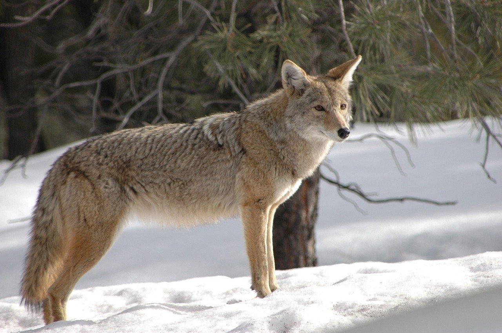
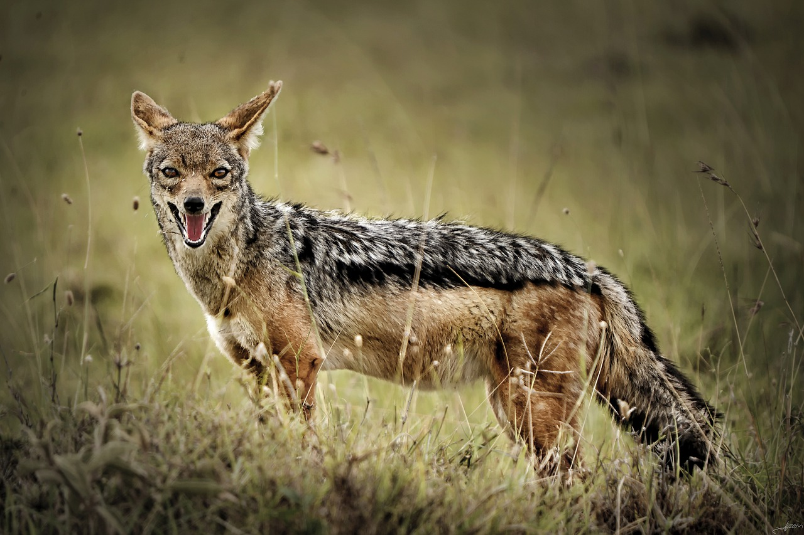
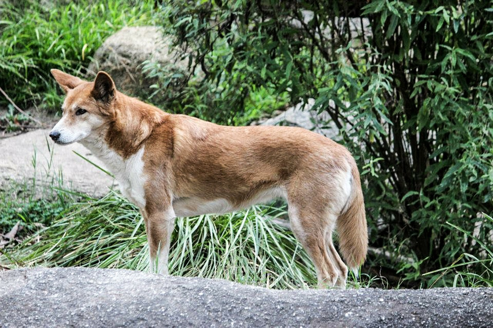
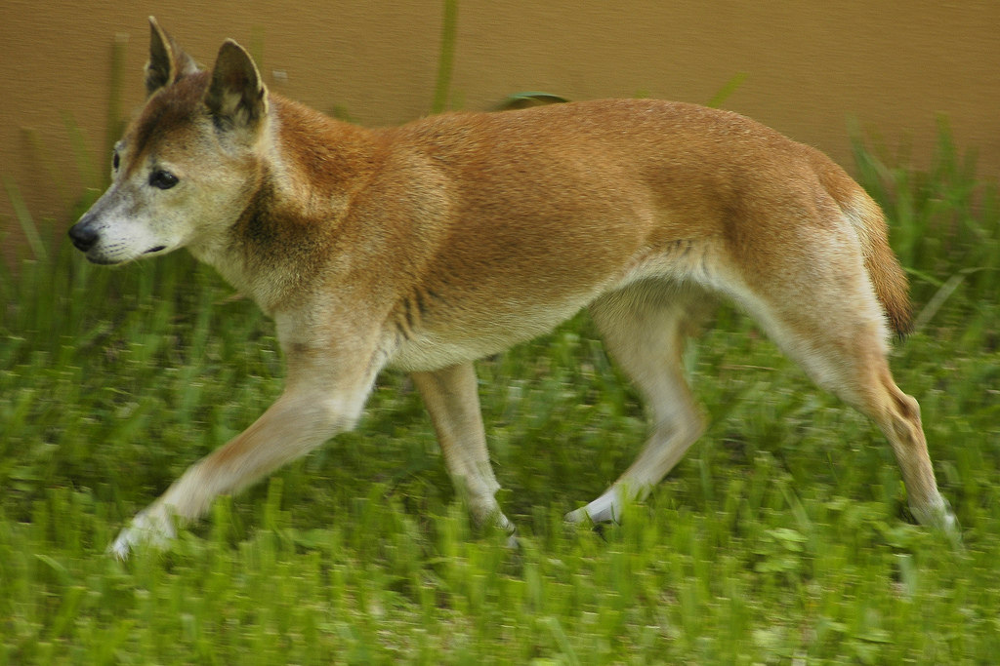
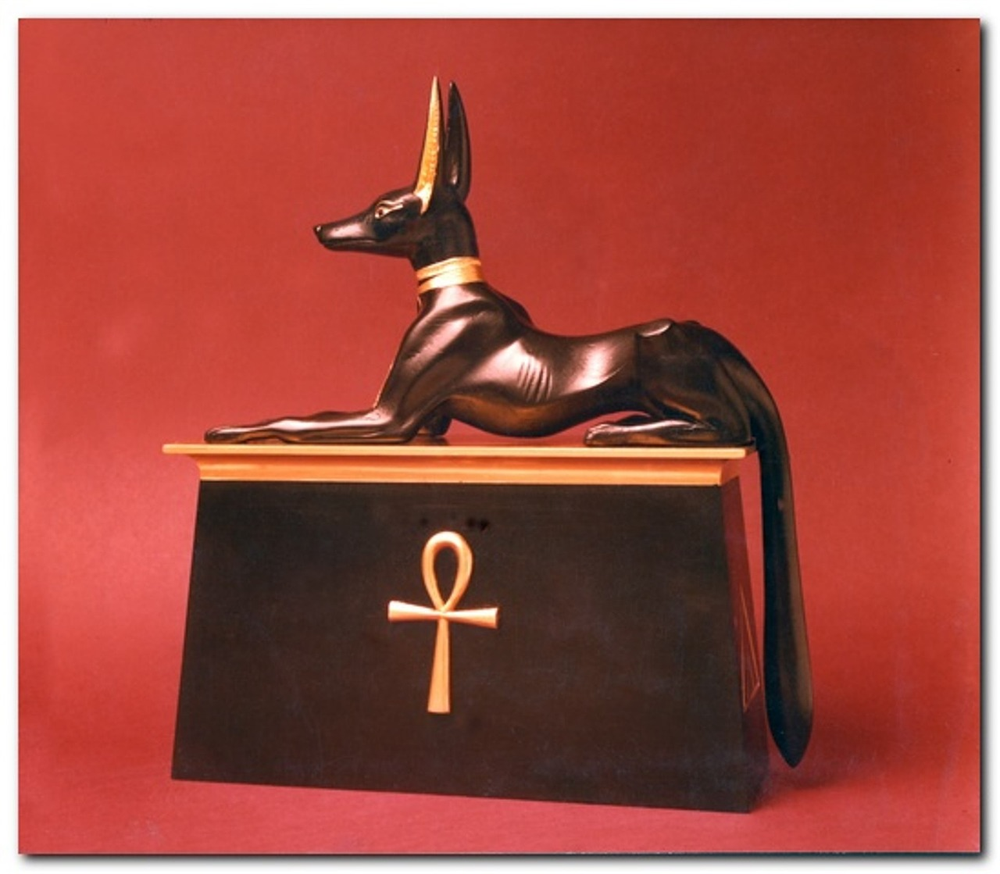

1.分類
学名︰Canis lupus familiaris
イヌはネコ目(食肉目)イヌ科イヌ属に分類される哺乳類の一種である。
広義の「イヌ」は広くイヌ科に属する動物（イエイヌ、オオカミ、コヨーテ、ジャッカル、キツネ、タヌキ、ヤブイヌ、リカオンなど）の総称でもあるが、日本ではこちらの用法はあまり一般的ではなく、「イヌ類」などとしてイエイヌと区別するのが普通である。
※コヨーテ ※ジャッカル2.身体的特徴
イヌ科の動物は、細長い四肢など、持久力重視の走行に適した体のつくりをしている。
また、イヌは古くから品種改良が繰り返されて、人工的に改良された品種には、自然界では極めて珍しい難産になるものも多く、品種によっては、出産時に帝王切開が必要不可欠となる（主にブルドッグ）。
※ブルドッグ爪は先が尖っており、走るときにスパイクのような役割をする。ただし、ネコ科のものほど鋭くはない。爪を狩りの道具とするものが多いネコ類とは異なり、イヌ科の動物は爪を引っ込めることができず、各指はほとんど広げることができない。
尾は走行中の方向転換で舵として働くが、オオカミなどと比べると細く短くなっており、また、日本犬に多く見られるように巻き上がっているものがあるのは、筋肉の一部が退化して弱くなっているためである。
イヌの感覚のうち最も発達しているのは嗅覚であり、においで食べられるものかどうか、目の前にいる動物は敵か味方かなどを判断する。コミュニケーションなどにも使われるため、イヌにとっては嗅覚はなくてはならない存在である。また、イヌの嗅覚はヒトの数千から数万倍とされる。
3.生態的特徴
イヌの特徴としてヒトと同じく社会性を持つ生き物であることが挙げられる。意思疎通をするための感情や表情も豊かで、褒める、認める、命令するなどの概念を持っている。ヒトに飼われているイヌは、人間の家族と自身を1つの群れの構成員と見なしていると考えられ、群れの中の上位者によく従い、その命令に忠実な行動を取る。
全般的に高い知能を有する。また、品種によってはより優れた学習能力を示す。
4.食性／繁殖
食性
ネコと比較すると雑食性が強く、肉以外にも野菜や果物、穀物や人用のお菓子も食する。
繁殖
メスの発情周期は6から8か月であるが、犬種により差がある。発情期間は約3ヵ月で、この期間のうち前期1ヵ月の間が実際に交尾により繁殖が行える可能性のある期間である。発情期に入ると、メスは性器を自ら舐める仕草が多くなり始める。
5.生息分布
ジャッカル類は主にアフリカに、（アジアに分布の及ぶキンイロジャッカルはジャッカル類では無くオオカミに近縁だとされる）、コヨーテ類は北アメリカ大陸に分布する。
また、オーストラリア大陸と周辺地域に生息するディンゴと、ニューギニア島に生息するニューギニアン・シンギング・ドッグは、人類によって約4,000年前に持ち込まれたイヌであり、かつては別種とされていたが、現在はイエイヌとともに、タイリクオオカミの1亜種とされている。
※ディンゴ※ニューギニアン・シンギング・ドッグ
6.起源／歴史
古代メソポタミアや古代ギリシアでは彫刻や壷に飼いイヌが描かれており、古代エジプトでは犬は死を司る存在とされ（アヌビス神）、飼い犬が死ぬと埋葬が都度になされていた。
※アヌビス神中国の新石器時代の遺跡からは、犬の骨が大量に出土している。中国大陸に住む人々は犬を食べる文化（犬食文化）を持っていたとされている。また、古代中国では境界を守るための生贄など、呪術や儀式にも利用されていた。
中央アジアの遊牧民の間では、家畜の見張りや誘導を行うのに欠かせない犬は、大切にされた。
欧米諸国では、古代から狩猟の盛んな文化圏のため、猟犬としての犬との共存に長い歴史がある。今日では特に英国と米国、ドイツなどに愛犬家が多い。
日本列島においては犬の起源は不明であるが、家畜化された犬を飼う習慣が日本列島に渡ってきたと考えられている。縄文時代早期からの遺跡から犬（縄文犬）が出土している。その一部は埋葬された状態だが、多数例は散乱状態で出ており、家族の一員として飼われた犬と、そうでない犬がいたと考えられている。